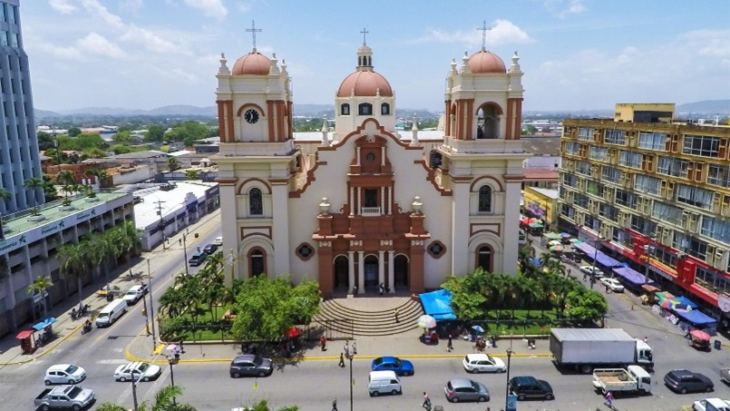
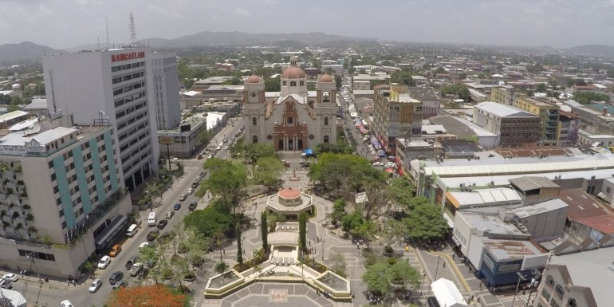

 San Pedro Sula es una ciudad de la República de Honduras, capital administrativa del departamento de Cortés y una de las ciudades más grandes de Centroamérica y la segunda ciudad en población detrás de las ciudades gemelas de Tegucigalpa y Comayagüela. Entre otras muestras de su importancia, la ciudad es sede de las empresas industriales más importantes del país, por lo que también es conocida como la capital industrial del país.
 San Pedro Sula fue fundada el 27 de junio de 1536, bajo el nombre de San Pedro de Puerto Caballos por el conquistador español Pedro de Alvarado. Inicialmente, la villa se estableció en el pueblo indígena de Choloma, al norte de la actual ciudad y muy próxima a Puerto Cortés.
Por más de dos siglos desde su fundación, el crecimiento demográfico de San Pedro Sula fue bastante lento. En la actualidad, San Pedro Sula es la ciudad con la más alta tasa de crecimiento poblacional de Honduras, El desarrollo económico alcanzado a raíz de la llegada de las transnacionales bananeras a principios del siglo XX, y el posterior establecimiento de parques industriales (ZIP) en el valle de Sula impulsó en gran medida el aumento poblacional de San Pedro Sula.
En 1775 se terminó de construir la Fortaleza de San Fernando de Omoa. Este lugar se convirtió en un importante puerto para el país y provocó el ascenso de San Pedro, como vía intermedia para el transporte de productos hacia el interior de Honduras y viceversa. Durante este período (1714–1789) la población de San San Pedro aumentó de 70 habitantes a 375.